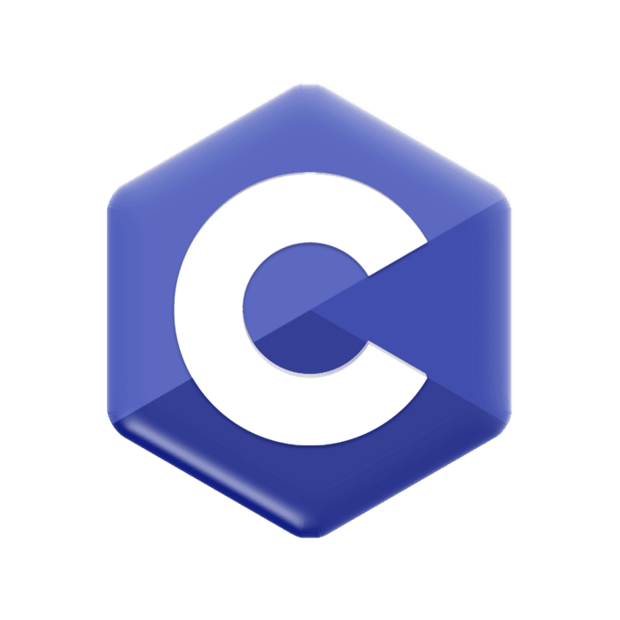
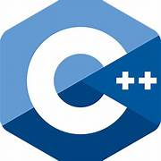
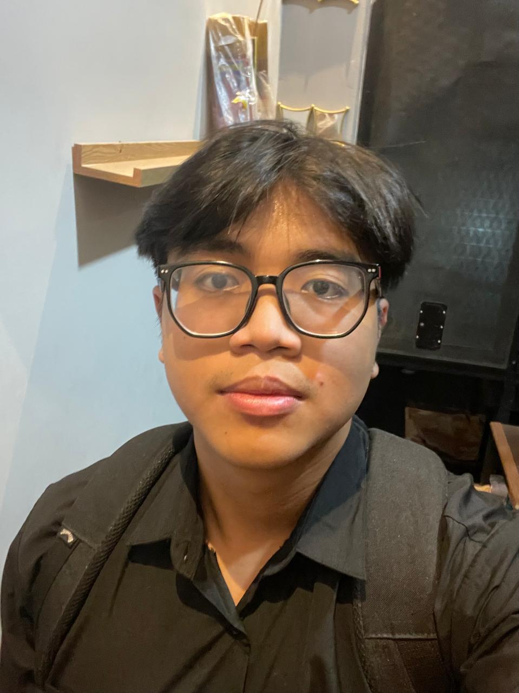

Training & Skills
Graphic Design
Desain visual untuk konten web dan poster kegiatan.
Photoshoot
Dokumentasi acara internal maupun eksternal.

Problem Solving
Teamwork
Overview
Mahasiswa Teknik Informatika di Institut Teknologi Sepuluh Nopember (ITS) dengan ketertarikan di bidang kreatif seperti desain grafis dan fotografi. Berkomitmen menyelesaikan segala sesuatu yang sudah dimulai dengan tuntas, punya semangat belajar tinggi, dan terbiasa bekerja dalam tim melalui berbagai organisasi kampus.
📍 Surabaya, Jawa Timur
Mahasiswa aktif Teknik Informatika, Surabaya.
Pelajar, Bali.
Memelihara, mengembangkan, dan memperbarui konten situs web resmi TPKH ITS.
Menaungi minat dan bakat mahasiswa Hindu ITS.
Mendokumentasikan acara internal maupun eksternal di SMAN 4 Denpasar.
Desain visual untuk konten web dan poster kegiatan.
Dokumentasi acara internal maupun eksternal.

Problem Solving
TeamworkBeberapa pencapaian di bidang desain dan olahraga elektronik yang pernah diraih selama sekolah dan kuliah, mulai dari kompetisi desain web hingga turnamen esport kampus.
Semifinalist - Web Design ITCC, Universitas Udayana
Best Design - Web Design Competition, Time Doors Academy
Juara 1 - Maba Cup, Cabang Olahraga Mobile Legends